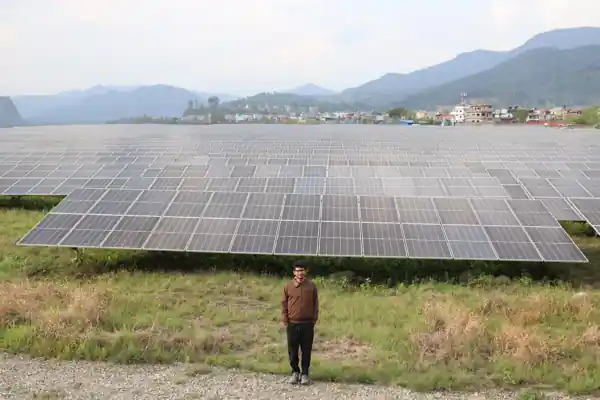
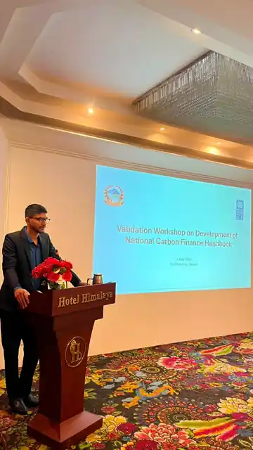
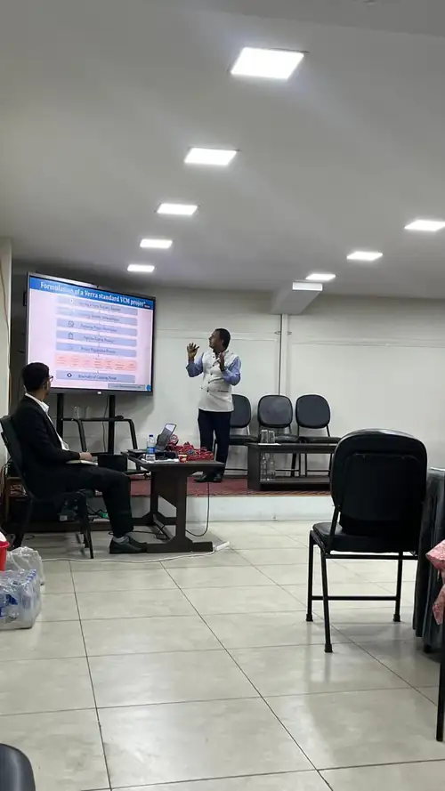

Energy systems
Renewable energy assessment, energy planning, demand analysis, scenario modelling and low-carbon technology evaluation.
Mechanical Engineer · Renewable Energy Engineering
I work at the intersection of renewable energy, energy efficiency, systems modelling, operations research and carbon finance — translating field evidence into practical low-carbon solutions.

Profile
I am a Mechanical Engineer currently pursuing an MSc in Renewable Energy Engineering at Pulchowk Campus, Institute of Engineering, Tribhuvan University.
My work spans municipal energy planning, industrial and institutional energy audits, greenhouse-gas projection, carbon-footprint assessment, carbon-finance research, mathematical modelling, optimization and technical reporting.
I am most interested in assignments where engineering analysis has to connect with real operating conditions, policy constraints, economics and implementation decisions.
Renewable energy assessment, energy planning, demand analysis, scenario modelling and low-carbon technology evaluation.
Field measurements, equipment assessment, energy-use diagnostics, conservation measures, savings and payback analysis.
GHG inventories, emission projections, MRV concepts, carbon pricing, Article 6 and carbon-finance research.
Operations research, spreadsheet modelling, engineering design, 3D modelling, prototyping and technical documentation.
Experience
Mechanical Engineer
Working across clean-energy, energy-efficiency and climate-related consulting assignments in Nepal.
Mechanical Engineering Intern
Contributed to mechanical design work for ropeway systems, including 3D modelling of gondola and chassis components and support to driving-mechanism design.
Selected work
Selected projects from professional and academic work.

Technical support to a UNDP-supported national initiative coordinated with the Ministry of Forests and Environment. Work included literature and policy review covering NDC 3.0, NAP, LTS, carbon-trade regulations, Article 6, MRV guidance and national/international carbon-finance references.

Facility-level GHG inventories covering electricity, diesel generators, vehicles, LPG, refrigerants, anesthetic gases, solid waste and wastewater, followed by assessment of practical decarbonization measures.
Field assessment of municipal energy-use patterns, demand forecasting and GHG projection to 2030 under multiple intervention scenarios.

Detailed assessment of electrical energy consumption, equipment and operating practices in a 100-bed healthcare facility, including field measurement, demand analysis, conservation measures and payback evaluation.
Designed and fabricated a machine for bamboo-panel production, developing 3D models and technical drawings and participating in prototype assembly, testing and refinement.
Contributed to WECS-supported energy-audit assignments and national reference documents for domestic appliances, industrial sectors, and commercial and residential sectors.
How I work
My strongest work sits between site-level evidence and structured analysis.
Site visits, equipment inventories, bills, fuel records, surveys, real-time measurements and stakeholder consultation.
Clean datasets, define baselines, identify assumptions and organize the evidence needed for modelling.
Use spreadsheets, LEAP, SPSS and operations-research methods to compare demand, emissions, costs and interventions.
Turn analysis into technical recommendations, investment logic, policy inputs and implementation priorities.

Education & research
Master of Science
Pulchowk Campus, Institute of Engineering, Tribhuvan University
Bachelor of Engineering
Pulchowk Campus, Institute of Engineering, Tribhuvan University
Toolkit
Excel · LEAP · SPSS · Oracle Crystal Ball · FINPLAN · C Programming
SolidWorks · AutoCAD · 3D modelling · technical drawings · prototyping
Technical reports · presentations · questionnaires · stakeholder materials · charts & tables
Recognition
Academic, engineering and team-based recognition from IOE Pulchowk activities.
Contact
I am open to professional collaboration, technical assignments, research discussions and opportunities related to renewable energy, energy efficiency, carbon finance and sustainable engineering.